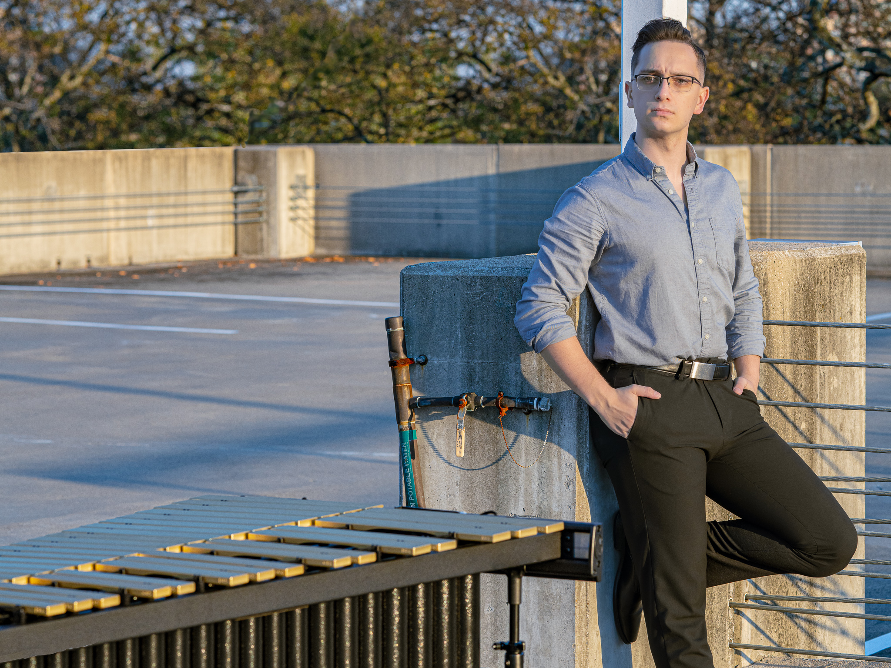

Eric Whitmer is a percussionist, musicologist, arts administrator and photographer. Growing up in rural northern California, they got their start in music taking piano lessons from their grandmother. When that didn’t stick, Eric began
playing percussion through the Orff approach to music education at Redding School of the Arts.
As a percussionist, Eric has played all over the country including Tanglewood, the National Museum of African American Music, the National Gallery of Arts, and in a canoe in the middle of Lake Dunmore. Specializing in contemporary chamber
music, Eric has worked with a wide variety of ensembles, including an ensemble-in-residence at the Cortona Sessions for New Music at Florida State University. They have given concerto performances with both the North State Symphony, and the
Shasta Symphony Orchestra. A frequent commissioner and performer of new works, Eric has commissioned works by Kristian de Leon, Stan Link, Josh McGuire, Brian Ellis, and Madeline Merwin.

Eric is a profound believer in the power of music to tell stories and create empathy between disparate groups of people. Recent projects within this ideal include the commissioning of We Breathe Together by Kristian de Leon,a
piece in memory of victims of conversion therapy, performances of Parkland by Marc Mellits, a work in memory of victims of the Marjory Stoneman Douglas shooting, and a through-composed recital adressing survivorship of sexual
violence. Eric works to curate and perform events that put music and topics of social justice on the same stage. Recently, Eric curated a series of events surrounding the history of HIV/AIDS to coincide with the Vanderbilt Orchestra’s
performance of John Corigliano’s Symphony No. 1. They initiated a PrEP drive in partnership with Music City PrEP and a panel discussion bringing together experts in queer history, doctors, and ethicists to discuss HIV/AIDS (2022).
Within their work in arts administration, Eric has worked for organizations like Sō Percussion, the Engine for Art, Democracy, and Justice, Southern California Marimba, North State Symphony, Vanderbilt University, the Redding Performing
Arts Society, and Susie Ibarra’s studio. Upcoming projects include a recital documenting and performing queer contributions to dance music and a recording of Life Sentences a work written for Eric by Stan Link.
Eric will graduate from Vanderbilt University in May of 2023, with a degree in Percussion Performance, minoring in Business with a concentration in Musicology. While at Vanderbilt, Eric was recognized as a Dean’s Honor Scholar and has
received the Littlejohn Research Fellowship for their research about the American Orchestra. They are also the inaugural research fellow and ambassador for the Engine for Art, Democracy, and Justice. Eric’s teachers and mentors include Jake
Nissly, Jon Bisessi, Ji Hye Jung, Dr. Dwayne Corbin, Dr. Melanie Lowe, Dr. Robert Fry, Dr. Rebecca Epstein-Levi, Mitchell Korn, and Robin Fountain, amongst many others.
Solo
"32-44,000 Ft." By Kristian de Leon
"Parkland" By Marc Mellits
"Life Sentences" By Stan Link
Professional Recording Coming in Spring 2022
Chamber
"Water Wine Brandy Brine" By Viet Cuong
"Music For Five Musicians" By Marc Mellits
"Death Wish" By Gemma Peacocke
"Sacrament" By Mario Diaz de Leon
Comission Amy Beth Kirsten's New Marimba Solo
Join in on comissioning
Amy Beth Kirsten as she begins to write her second solo for
marimba. A recipient of artist fellowships from the John S. Guggenheim Foundation and the
Rockefeller Foundation, Kirsten has been comissioned by Sandbox Percussion, eighth blackbird, and Alarm Will Sound.
Her first marimba solo, "Empty Shell Girl" was released in 2020 by Mike Compitello.
Following in a similar vein of her first solo, Kirsten is interested in continuing
to explore the sonic possibilities of the instrument in this new solo. The work
will be 8 minuted in duration and will be composed for solo 5.0 octave marimba.
Through this consortium there is a two-tierd pricing scheme to allow for a student discount.
For Students*
$125
Eric will be in touch after payment requesting verification of student status.
For Professionals
$200
Music As Service
Overview
This project aims to provide meaningful concert experiences
for individuals who might not otherwise have access to live
musical performances. For years, organizations have provided
free tickets to individuals whose daily life might not provide
them with the opportunity to experience live musical
performances. These concerts aim to flip the paradigm by
bringing the musician to the audience as a way to bridge gaps
in our communities where live instrumental music is not
usually found. Eric will seek out audiences at places like
domestic violence shelters, long-term care facilities,
prisons, juvenile detention centers, community centers,
and places of worship in order to provide as many people
as possible with quality musical performances.
These performances will emphasize aspects of community
building using intimate performance as a vehicle to share
artistic expression.
These concerts are designed to be enjoyable to anyone who
might wish to join. Rather than providing guided listening,
Eric aims to simply share music with a key focus on curating
concerts of widely accessible music for a broad spectrum of
audience members. In order to achieve these goals, Eric will
partner with living composers to write works that are based
around a fundamental idea that many people can find relatable.
Through these performances, Eric hopes to provide entertaining
performances that demonstrate that all kinds of music are for
everyone.
For Composers
I am seeking composers to collaborate with so that I can
showcase their music as a part of this project. In exchange
for a composer’s participation in this project, I will provide
them with a high-quality audio and video recording of their
work, in addition to coachings on how to compose for
percussion. Ideally, this work will be primarily for solo
vibraphone, though additional instruments or speaking parts
can be added after consultation with me.
Additionally works for this project should be based around
ideas/concepts that a wide range of audience members
can have a connection with. Some examples of this
could be a theme and variation on a popular song,
a piece that explores a musical form, a work that
explores a place/feeling/time, etc. Any composer
interested in participating should reach out here
to set up a time to talk about their proposal.